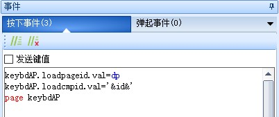

注意
如果您没有修改键盘功能的需求不需要再往下看了，可以查看其它章节
键盘的实现原理
系统键盘-常用控件和变量说明
①变量loadpageid.val：调用页的页面ID。
②变量loadcmpid.val：调用页的控件ID。
③定时器tm0：让输入框有个光标不断闪烁，如果不需要，控件属性en=0即可。
④变量inputlenth：获取正在使用系统键盘控件字符最大长度。
⑤变量input：输入的数据。
⑥文本show：键盘显示的数据,主要目的是为了让输入框有个闪烁的效果。
其他跳转到键盘页面的方法
注意
正常情况下是不需要配下面这三条代码的
是为了让其他原本不支持键盘的控件控件也能调用键盘
或者是从其他工程中导入的键盘,因为不是用正常方法添加的键盘,没法通过key属性进行配置,需要使用这个方法
page到键盘页之前，先对键盘页的loadgageid.val和loadcmpid.val赋值就可以了
一般在文本控件或数字控件的按下事件中进行赋值，键盘名.loadpageid.val=dp，键盘名.loadcmpid.val=当前控件的id
其他的逻辑会自动实现,loadpageid.val表示调用页的页面ID,loadcmpid.val表示调用页的控件ID,然后调用page 指令跳转到键盘页面即可
这样就可以在键盘页面判断跳转过来的控件类型（type属性），然后根据不同类型调用不同代码转换到键盘上进行显示
keybdAP.loadpageid.val=dp // dp:当前页面
keybdAP.loadcmpid.val='&id&' // '&id&'当前被触发控件的id
page keybdAP

配置键盘的过程其实就是上位机帮我们自动添加了这三条代码。
演示工程下载链接：
键盘如何获取到原始控件的值
下面的代码为键盘页面的前初始化事件
//调用此页之前，先对此页的loadpageid.val和loadcmpid.val赋值就可以了，其他的逻辑本页会自动实现
//loadpageid.val表示调用页的页面ID,loadcmpid.val表示调用页的控件ID
if(p[loadpageid.val].b[loadcmpid.val].type==54)
{
covx p[loadpageid.val].b[loadcmpid.val].val,input.txt,0,0
inputlenth.val=24
}else if(p[loadpageid.val].b[loadcmpid.val].type==59)
{
inputlenth.val=p[loadpageid.val].b[loadcmpid.val].val
if(inputlenth.val<0)
{
inputlenth.val*=-1
input.txt="-"
}else
{
input.txt=""
}
temp.val=1
for(temp2.val=0;temp2.val<p[loadpageid.val].b[loadcmpid.val].vvs1;temp2.val++)
{
temp.val*=10
}
temp2.val=inputlenth.val/temp.val//得到整数位
cov temp2.val,tempstr.txt,0
input.txt+=tempstr.txt+"."
temp2.val=temp2.val*temp.val-inputlenth.val//得到小数位
if(temp2.val<0)
{
temp2.val*=-1
}
covx temp2.val,tempstr.txt,p[loadpageid.val].b[loadcmpid.val].vvs1,0
input.txt+=tempstr.txt
inputlenth.val=24
}else
{
input.txt=p[loadpageid.val].b[loadcmpid.val].txt
inputlenth.val=p[loadpageid.val].b[loadcmpid.val].txt_maxl
if(p[loadpageid.val].b[loadcmpid.val].type==116)
{
show.pw=p[loadpageid.val].b[loadcmpid.val].pw
}
}
show.txt=input.txt
可以看到获取到原始控件的值分为3个步骤
通过p[loadpageid.val].b[loadcmpid.val].type判断原始控件的类型是数字控件、虚拟浮点数或者其他，loadpageid.val和loadcmpid.val是如何传进来可以参考 其他跳转到键盘页面的方法
根据不同的控件类型，将数据赋值到input.txt中
将input.txt赋值给show.txt
输入完成后如何赋值给原始控件
下面的代码为键盘页面的OK按键的弹起事件
//调用此页之前，先对此页的loadpageid.val和loadcmpid.val赋值就可以了，其他的逻辑本页会自动实现
//loadpageid.val表示调用页的页面ID,loadcmpid.val表示调用页的控件ID
if(p[loadpageid.val].b[loadcmpid.val].type==54)
{
covx input.txt,p[loadpageid.val].b[loadcmpid.val].val,0,0
}else if(p[loadpageid.val].b[loadcmpid.val].type==59)
{
covx input.txt,temp.val,0,0
if(temp.val<0)
{
temp.val*=-1
}
for(temp2.val=0;temp2.val<p[loadpageid.val].b[loadcmpid.val].vvs1;temp2.val++)
{
temp.val*=10
}
p[loadpageid.val].b[loadcmpid.val].val=temp.val
strlen input.txt,temp.val
temp.val--
while(temp.val>=0)
{
substr input.txt,tempstr.txt,temp.val,1
if(tempstr.txt==".")
{
substr input.txt,tempstr.txt,temp.val+1,p[loadpageid.val].b[loadcmpid.val].vvs1
covx tempstr.txt,temp2.val,0,0
strlen tempstr.txt,temp.val
while(temp.val<p[loadpageid.val].b[loadcmpid.val].vvs1)
{
temp2.val*=10
temp.val++
}
p[loadpageid.val].b[loadcmpid.val].val+=temp2.val
temp.val=-1
}
temp.val--
}
substr input.txt,tempstr.txt,0,1
if(tempstr.txt=="-")
{
p[loadpageid.val].b[loadcmpid.val].val*=-1
}
}else
{
p[loadpageid.val].b[loadcmpid.val].txt=input.txt
}
page loadpageid.val
可以看到输入完成后赋值给原始控件分为3个步骤
通过p[loadpageid.val].b[loadcmpid.val].type判断触发控件的类型是数字控件、虚拟浮点数或者其他，loadpageid.val和loadcmpid.val是如何传进来可以参考 其他跳转到键盘页面的方法
根据不同的控件类型，将input.txt赋值给原始控件
返回 loadpageid.val所记录的页面id